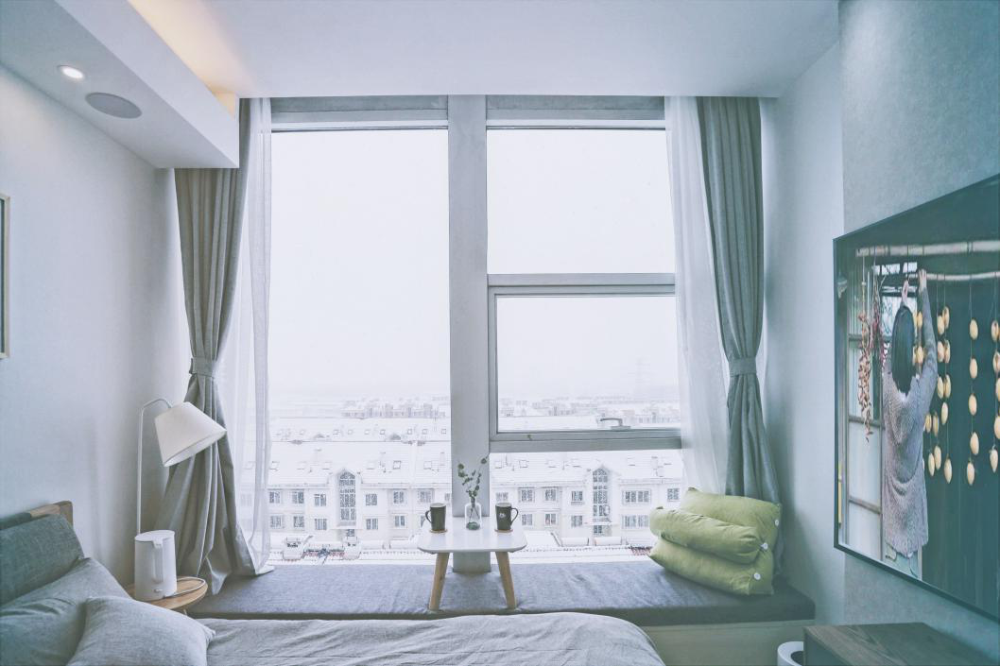
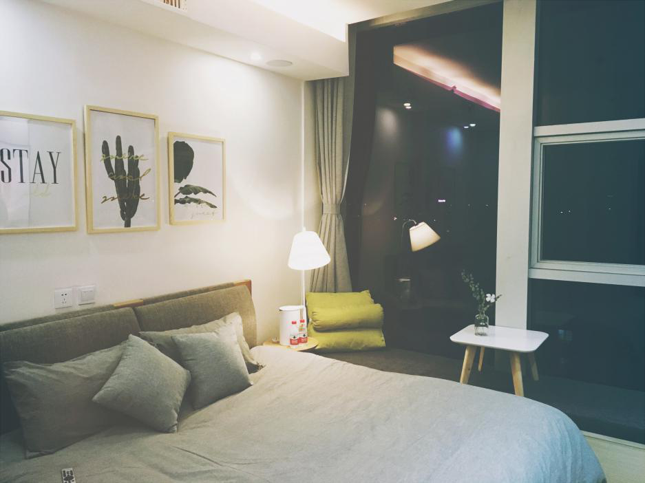
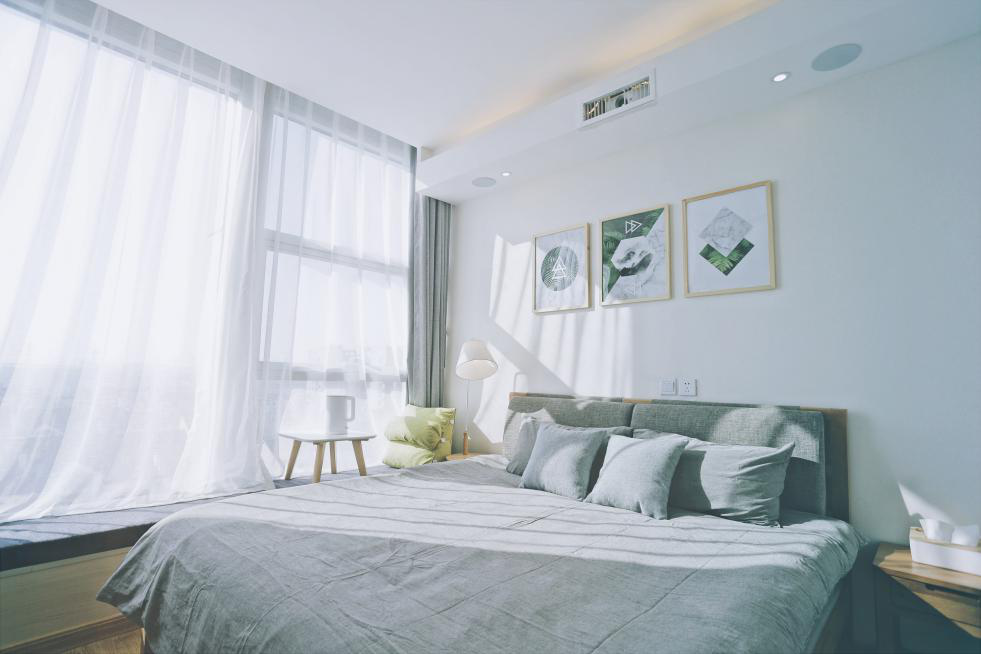

一、行业背景
从“营改增”落地到万豪正式收购喜达屋，从7天酒店纽交所退市到如家与首旅合并，酒店行业的发展呈现动荡、多元与融合的趋势。虽然目前酒店仍然是住宿业的主体，但是快捷酒店的毛利、成本结构等都在发生改变。以C2C模式为代表的Airbnb、小猪短租，以连锁公寓为主的途家等企业目前在互联网酒店行业中各有优势，整体上，酒店行业呈现传统酒店与互联网新模式从分化到融合的趋势，同时，由于房客个性化消费的需求凸显，传统酒店经营模式亟待改变。
二、品牌介绍
‘电影电竞快捷自助共享酒店’致力于通过技术创新，打造全互联网运营的网约式云住宿“酒店”产品和模式。
三、应用简介
我们通过我们自己建立的Share together的手机APP和PC端软件来进行网上预定，挑选房型、服务，以及房间所喜欢的装饰，该app是以C端客户为用户群，利用该app可实现酒店‘自助’选择、下单、登记入住、下单打扫、点餐、退房等分类功能。 该平台是兼职酒店打理人员平台。兼职人员在经过职业培训后可在App上注册、进行抢单。由于每个房间上线的时候，都会预设打扫的流程、物品清单、摆放的图片，抢单成功后兼职人员会得到包括面积、摆设、打扫要求、房间布置风格、关键物件摆设方法等有关房间的信息提示，然后按照这一套标准化流程打扫。而客户可以App上进行评价，评价直接和保洁员的收入挂钩，从而实现质量管控。我们的软件还建起三级控制体系。第一级，退房清单生成后，丽家会成员公平抢单，距离优先;第二级，如果20分钟内无人抢单，系统自动派单，保洁有权拒绝;第三级，派单不成，则由值班经理亲自处理。
四、运营模式
我们所建立的酒店只提供早餐和住宿服务，摆脱了物理空间对酒店概念的限制，公寓、住宅、酒店等任何一个房间都可以成为，在我们这个体系里，没有前台，接待和保安，客户全程网上订房、开门、退房。业主通过App管理房间，房屋打扫则由App派单兼职保洁完成。
五、盈利模式
我们计划主要通过平台使用费即房间提成与加盟费、对外服务费、家居品售卖、提供其他服务例如配置自己喜欢房间样式我们来提供改善等来进行盈利.房东加盟APP，每间房需要缴纳加盟费，APP为其配备自主研发的门锁和线上运行标准，提供装修样稿，推荐供应商。